OSTWALD DILUTION LAW:
Dissociation constant of weak acid (Ka),
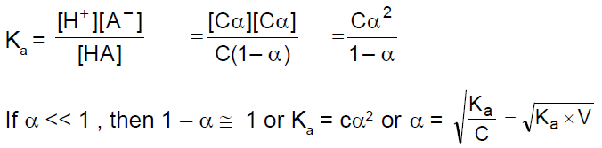Similarly for a weak base ,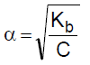Higher the value of Ka / Kb , strong is the acid / base.
Acidity and pH scale :
pH = log aH+ (where aH+ is the activity ofH+ ions =molar concentration for dilute solution).
[Note : pH can also be negative or > 14]
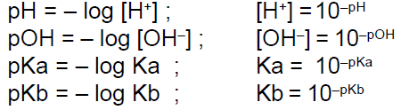PROPERTIESOFWATER :
In pure water [H+] = [OH] so it is Neutral.
Molar concentration / Molarity of water = 55.56 M.
Ionic product of water (Kw) :
Kw= [H+][OH] = 1014 at 25° (experimentally)
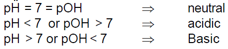Degree of dissociation of water :
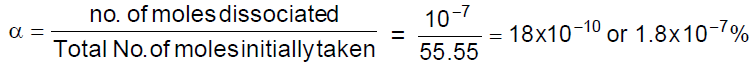Absolute dissociation constant of water :
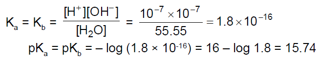 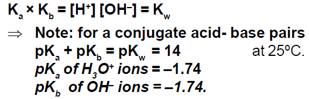pH Calculations of Different Types of Solutions:
Strong acid solution :
If concentration is greater than 10-6M In this case H+ ions coming from water can be neglected,
If concentration is less than 10-6 M In this case H+ ions coming from water cannot be neglected
Strong base solution :
Using similar method as in part (a) calculate first [OH-] and then use [H+] × [OH-] = 10-14
pH of mixture of two strong acids :
Number of H+ ions from I-solution = N1V1
Number of H+ ions from II-solution = N2V2
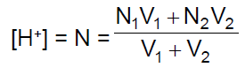pH of mixture of a strong acid and a strong base :
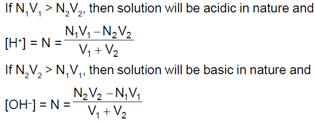pH of a weak acid(monoprotic) solution :
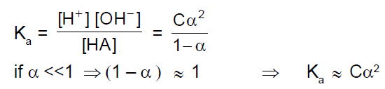RELATIVE STRENGTH OF TWOACIDS :
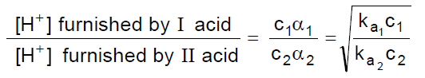SALT HYDROLYSIS :
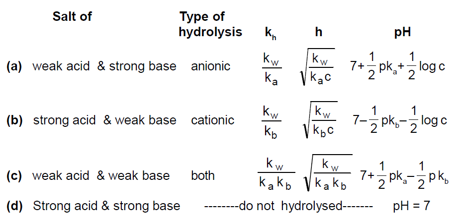Hydrolysis of ployvalent anions or cations
For [Na3PO4] = C
Ka1 × Kh3 = Kw
Ka1 × Kh2 = Kw
Ka3 × Kh1 = Kw
Generally pH is calculated only using the first step Hydrolysis
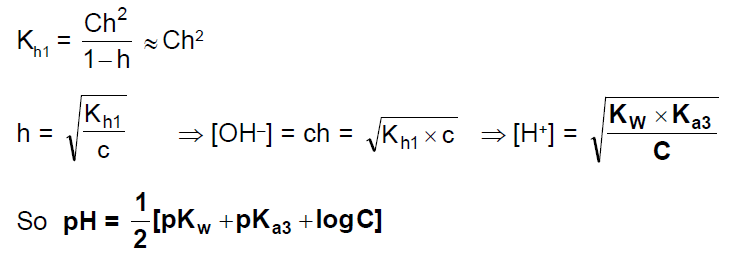BUFFER SOLUTION :
Acidic Buffer : e.g. CH3COOH and CH3COONa. (weak acid and salt of its conjugate base).
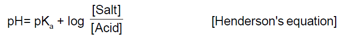Basic Buffer : e.g.NH4OH+NH4Cl. (weak base and salt of its conjugate acid).
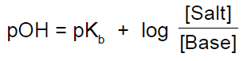SOLUBILITY PRODUCT :
Ksp = (xs)x (ys)y= xx.yy.(s)x+y
CONDITION FOR PRECIPITATION :
If ionic product KI.P > Ksp precipitation occurs, if KI.P = Ksp saturated solution (precipitation just begins or is just prevented).